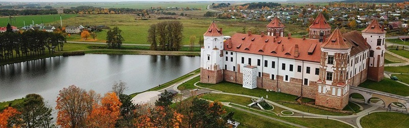
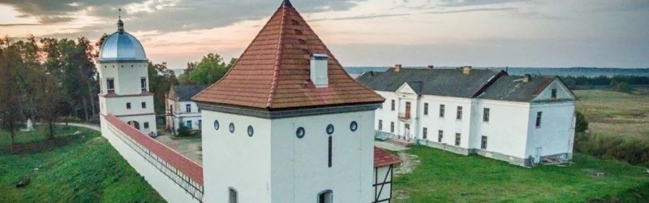
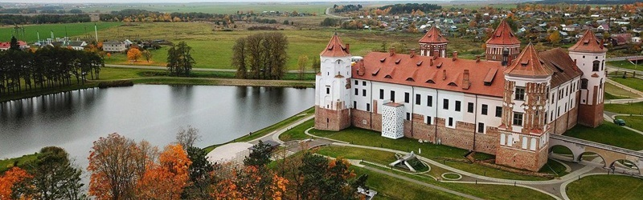
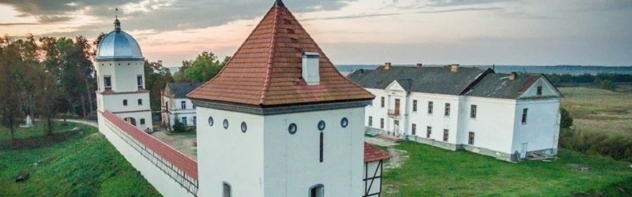

Коссовский замок
История этого замка Беларуси начинается не в Средневековье, а чуть позже - в 1838 году, когда князь Казимир Пусловский решил отстроить роскошную резиденцию. Название великого княжеского рода и породило название строению – его стали именовать дворец Пусловских.
 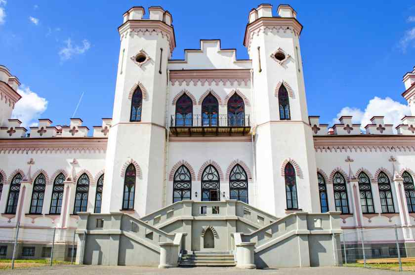
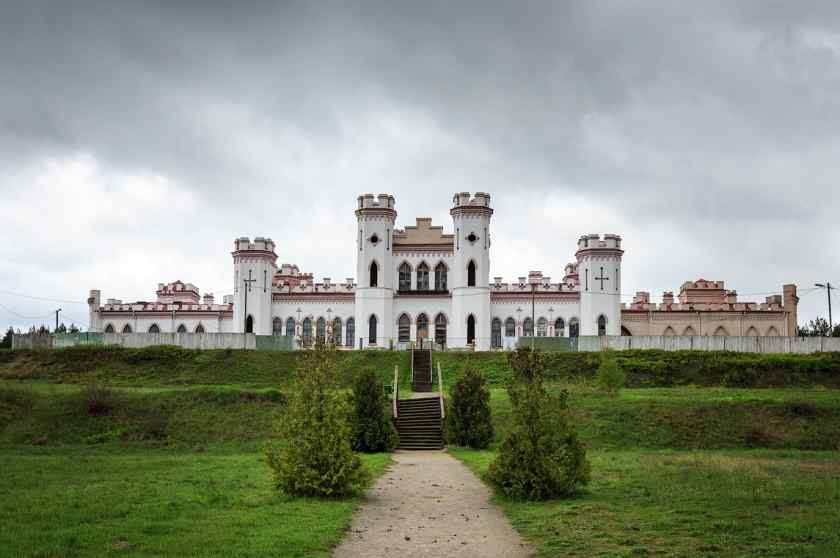
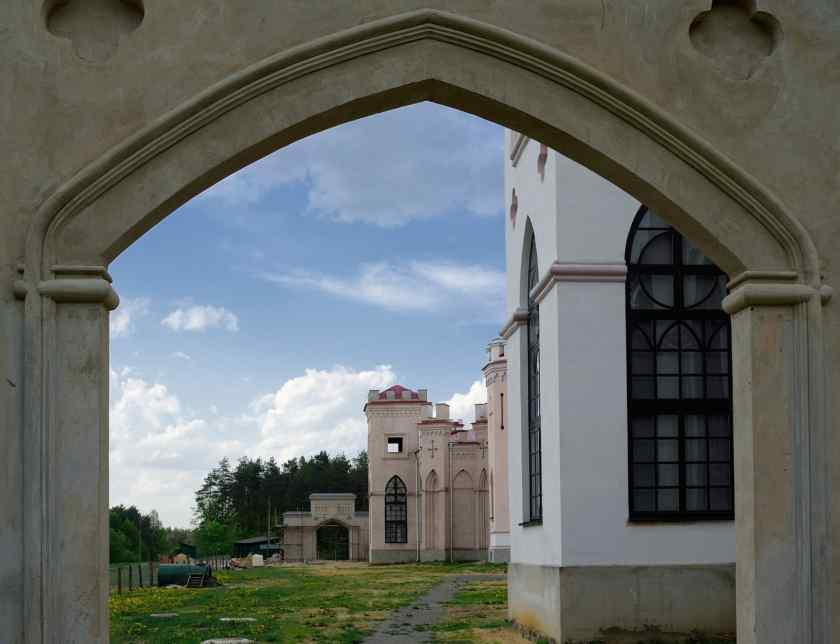
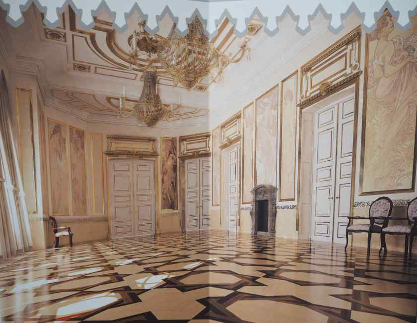
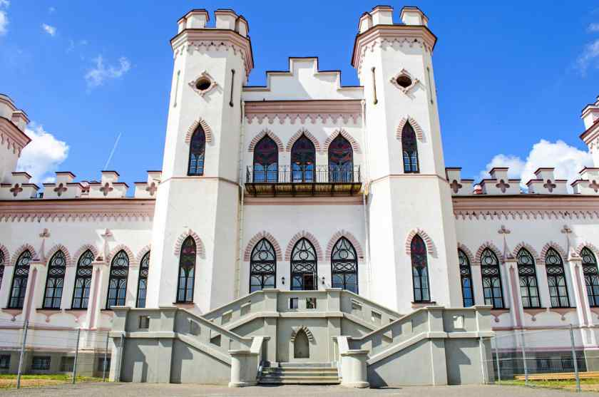
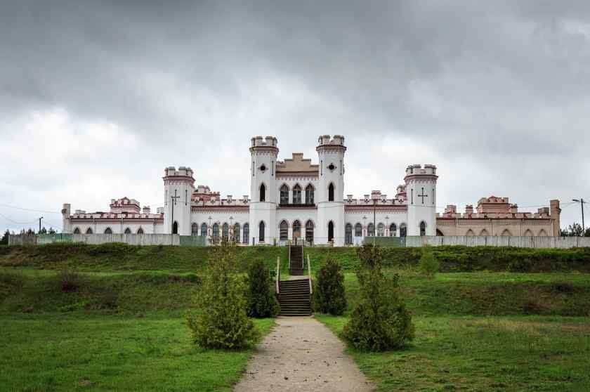
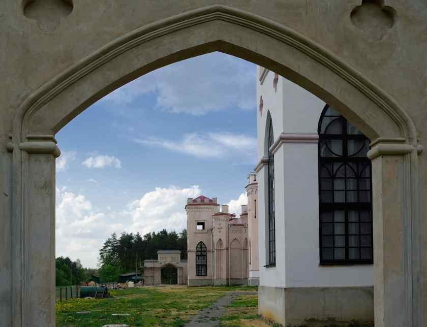
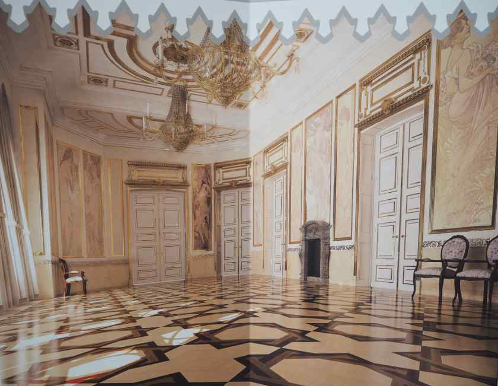
Коссовский замок – это не только дворец, но также историческая усадьба и уникальный природный ландшафт, которые вместе создали дворцово-парковый ансамбль. Строился замок 10 лет на небольшом возвышении. Архитектура замка выполнена в стиле ретроготики. Крепость имеет центральный корпус, который соединяется галереями с двумя одноэтажными крыльями. Башни разной высоты имеют квадратную форму и зубчатые завершения, что нехарактерно для архитектуры нашей страны. Поэтому замок выглядит необычно и дарит ощущение, что вы попали в средневековую Европу.
Каждое из 132 помещений замка имело роскошный интерьер: полы с отоплением, дорогие гобелены и ковры, скульптуры и декоративные камины. Каждая зала имела своё название и предназначение. В Белом зале устраивали балы, в Розовом проводили музыкальные вечера, в Парадном размещались росписи известных художников.
С 2008 года в Коссовском замке ведутся восстановительные работы, которые планируют завершить к концу этого года. Как только они закончатся, стены дворца Пусловских станут гостеприимной площадкой для проведения международных мероприятий и фестивалей. А пока замок открыт для посещений. Билет стоит 3 рубля (2 рубля по льготному тарифу).
Коссовский замок располагается в 220 км от Минска в Ивацевичском районе Брестской области и работает со среды по воскресенье с 10:00 до 17:30.